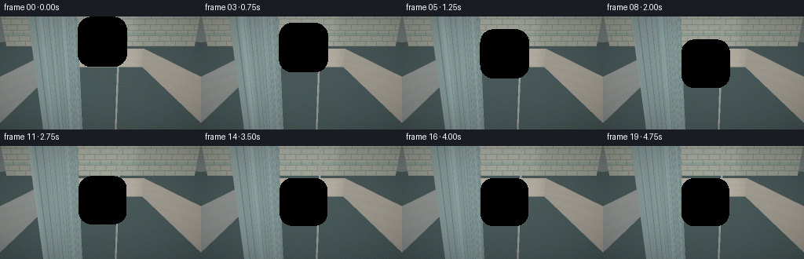
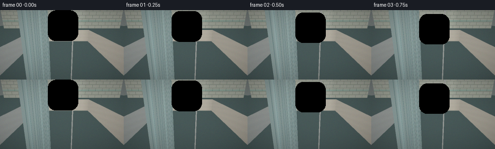
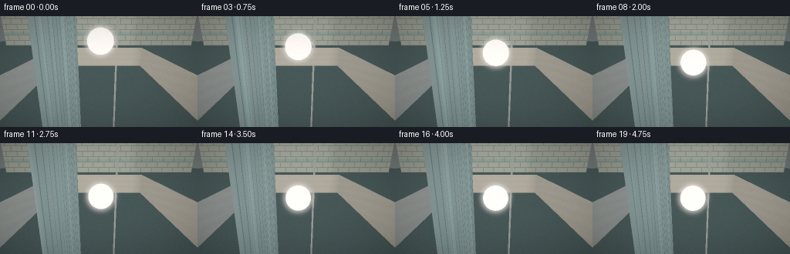
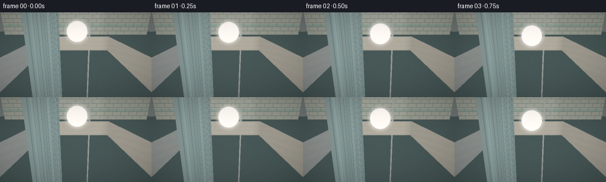

CODING AGENTS AS PIXEL WORLD MODELS
traex/DeepSeek-V4.1-Flash · phygen_010
点击播放 · 原生 RGB 像素
此结果可播放，但该运行尚未通过最终提交审核。页面展示不代表评测通过。
逐轮保存的候选
回放视频、检查图与代码变化。
每份候选均可单独播放。实际图片检查记录在下方工具轨迹中。
候选 01播放与检查图
点击播放 · 原生 RGB 像素


展开代码变化
--- 上一保存版本
+++ 本次保存版本
@@ -0,0 +1,606 @@
+#!/usr/bin/env python3
+"""Procedural RGB render of a glass ball being set onto bathwater."""
+
+from __future__ import annotations
+
+import math
+from pathlib import Path
+
+import cv2
+import numpy as np
+
+import artifact_io
+
+
+WIDTH = 256
+HEIGHT = 144
+FRAMES = 20
+FPS = 4.0
+SUPERSAMPLE = 2
+
+CAMERA = np.array([0.0, 1.14, -2.82], dtype=np.float64)
+TARGET = np.array([0.0, 0.23, 0.10], dtype=np.float64)
+WORLD_UP = np.array([0.0, 1.0, 0.0], dtype=np.float64)
+BALL_RADIUS = 0.265
+BALL_X = 0.035
+BALL_Z = 0.10
+CONTACT_FRAME = 12.0
+
+WATER_Y = 0.0
+TUB_X = 1.25
+TUB_Z_BACK = 1.42
+TUB_Z_FRONT = -1.48
+FLOOR_Y = -0.62
+RIM_Y = 0.55
+BACKDROP_Z = 1.92
+
+LIGHT_A = np.array([-0.48, 0.82, -0.56], dtype=np.float64)
+LIGHT_A /= np.linalg.norm(LIGHT_A)
+LIGHT_B = np.array([0.72, 0.38, 0.18], dtype=np.float64)
+LIGHT_B /= np.linalg.norm(LIGHT_B)
+
+
+def normalize(v, axis=-1):
+ return v / np.maximum(np.linalg.norm(v, axis=axis, keepdims=True), 1e-9)
+
+
+def smoothstep(a, b, x):
+ u = np.clip((x - a) / (b - a), 0.0, 1.0)
+ return u * u * (3.0 - 2.0 * u)
+
+
+def ball_state(frame):
+ t = frame / (FRAMES - 1)
+ contact_t = CONTACT_FRAME / (FRAMES - 1)
+ start_y = 0.86
+ contact_y = BALL_RADIUS - 0.008
+ if t < contact_t:
+ u = t / contact_t
+ # Slow at release and at contact, with a gentle drop through the middle.
+ u = 0.72 * u * u * (3.0 - 2.0 * u) + 0.28 * u
+ y = start_y + (contact_y - start_y) * u
+ else:
+ u = np.clip((t - contact_t) / (1.0 - contact_t), 0.0, 1.0)
+ y = contact_y - 0.017 * (1.0 - math.exp(-4.5 * u)) + 0.0035 * math.exp(-5.0 * u) * math.sin(15.0 * u)
+ x = BALL_X + 0.010 * math.sin(math.pi * t)
+ z = BALL_Z - 0.006 * t
+ return np.array([x, y, z], dtype=np.float64)
+
+
+def camera_rays(width, height):
+ forward = normalize(TARGET - CAMERA)
+ right = normalize(np.cross(WORLD_UP, forward))
+ up = normalize(np.cross(forward, right))
+ aspect = width / height
+ scale = math.tan(math.radians(42.0) * 0.5)
+
+ px = (np.arange(width, dtype=np.float64) + 0.5) / width
+ py = (np.arange(height, dtype=np.float64) + 0.5) / height
+ sx = (px * 2.0 - 1.0) * scale * aspect
+ sy = (1.0 - py * 2.0) * scale
+ xgrid, ygrid = np.meshgrid(sx, sy)
+ dirs = forward[None, None, :] + xgrid[..., None] * right + ygrid[..., None] * up
+ dirs = normalize(dirs)
+ origins = np.broadcast_to(CAMERA, dirs.shape).copy()
+ return origins, dirs
+
+
+def hit_sphere(origins, dirs, center, radius):
+ oc = origins - center
+ b = np.sum(oc * dirs, axis=-1)
+ c = np.sum(oc * oc, axis=-1) - radius * radius
+ disc = b * b - c
+ valid = disc >= 0.0
+ root = np.sqrt(np.maximum(disc, 0.0))
+ t0 = -b - root
+ t1 = -b + root
+ t = np.where(t0 > 1e-5, t0, t1)
+ valid &= t > 1e-5
+ t = np.where(valid, t, np.inf)
+ return t
+
+
+def hit_plane(origins, dirs, axis, value, bounds, normal_sign):
+ component = dirs[..., axis]
+ with np.errstate(divide="ignore", invalid="ignore"):
+ t = (value - origins[..., axis]) / component
+ points = origins + t[..., None] * dirs
+ valid = np.isfinite(t) & (t > 1e-5)
+ for point_axis, lo, hi in bounds:
+ valid &= (points[..., point_axis] >= lo) & (points[..., point_axis] <= hi)
+ t = np.where(valid, t, np.inf)
+ normal = np.zeros_like(origins)
+ normal[..., axis] = normal_sign
+ return t, normal
+
+
+def scene_intersections(origins, dirs, center):
+ """Return nearest t, material id, and surface normal."""
+ shape = origins.shape[:-1]
+ best_t = np.full(shape, np.inf, dtype=np.float64)
+ best_kind = np.zeros(shape, dtype=np.int8)
+ best_normal = np.zeros_like(origins)
+
+ sphere_t = hit_sphere(origins, dirs, center, BALL_RADIUS)
+ mask = sphere_t < best_t
+ best_t[mask] = sphere_t[mask]
+ best_kind[mask] = 1
+ sphere_points = origins + sphere_t[..., None] * dirs
+ sphere_normal = normalize(sphere_points - center)
+ best_normal[mask] = sphere_normal[mask]
+
+ surfaces = [
+ (0, WATER_Y, [(0, -TUB_X, TUB_X), (2, TUB_Z_FRONT, TUB_Z_BACK)], 1, 2),
+ (0, FLOOR_Y, [(0, -TUB_X, TUB_X), (2, TUB_Z_FRONT, TUB_Z_BACK)], 1, 3),
+ (2, TUB_Z_BACK, [(0, -TUB_X, TUB_X), (1, WATER_Y, RIM_Y)], -1, 4),
+ (2, BACKDROP_Z, [(0, -3.0, 3.0), (1, RIM_Y, 2.2)], -1, 5),
+ (0, RIM_Y, [(0, -1.55, 1.55), (2, TUB_Z_BACK, BACKDROP_Z)], 1, 6),
+ (0, RIM_Y, [(0, 1.25, 1.55), (2, TUB_Z_FRONT, BACKDROP_Z)], 1, 6),
+ (0, RIM_Y, [(0, -1.55, -1.25), (2, TUB_Z_FRONT, BACKDROP_Z)], 1, 6),
+ (0, -TUB_X, [(1, WATER_Y, RIM_Y), (2, TUB_Z_FRONT, TUB_Z_BACK)], 1, 7),
+ (0, TUB_X, [(1, WATER_Y, RIM_Y), (2, TUB_Z_FRONT, TUB_Z_BACK)], -1, 7),
+ ]
+ for axis, value, bounds, sign, kind in surfaces:
+ t, normal = hit_plane(origins, dirs, axis, value, bounds, sign)
+ mask = t < best_t
+ best_t[mask] = t[mask]
+ best_kind[mask] = kind
+ best_normal[mask] = normal[mask]
+ return best_t, best_kind, best_normal
+
+
+def scene_without_water(origins, dirs, center):
+ """Reflection helper: nearest glass or opaque surface, excluding water."""
+ shape = origins.shape[:-1]
+ best_t = np.full(shape, np.inf, dtype=np.float64)
+ best_kind = np.zeros(shape, dtype=np.int8)
+ best_normal = np.zeros_like(origins)
+
+ sphere_t = hit_sphere(origins, dirs, center, BALL_RADIUS)
+ mask = sphere_t < best_t
+ best_t[mask] = sphere_t[mask]
+ best_kind[mask] = 1
+ sphere_points = origins + sphere_t[..., None] * dirs
+ sphere_normal = normalize(sphere_points - center)
+ best_normal[mask] = sphere_normal[mask]
+
+ surfaces = [
+ (0, FLOOR_Y, [(0, -TUB_X, TUB_X), (2, TUB_Z_FRONT, TUB_Z_BACK)], 1, 3),
+ (2, TUB_Z_BACK, [(0, -TUB_X, TUB_X), (1, WATER_Y, RIM_Y)], -1, 4),
+ (2, BACKDROP_Z, [(0, -3.0, 3.0), (1, RIM_Y, 2.2)], -1, 5),
+ (0, RIM_Y, [(0, -1.55, 1.55), (2, TUB_Z_BACK, BACKDROP_Z)], 1, 6),
+ (0, RIM_Y, [(0, 1.25, 1.55), (2, TUB_Z_FRONT, BACKDROP_Z)], 1, 6),
+ (0, RIM_Y, [(0, -1.55, -1.25), (2, TUB_Z_FRONT, BACKDROP_Z)], 1, 6),
+ (0, -TUB_X, [(1, WATER_Y, RIM_Y), (2, TUB_Z_FRONT, TUB_Z_BACK)], 1, 7),
+ (0, TUB_X, [(1, WATER_Y, RIM_Y), (2, TUB_Z_FRONT, TUB_Z_BACK)], -1, 7),
+ ]
+ for axis, value, bounds, sign, kind in surfaces:
+ t, normal = hit_plane(origins, dirs, axis, value, bounds, sign)
+ mask = t < best_t
+ best_t[mask] = t[mask]
+ best_kind[mask] = kind
+ best_normal[mask] = normal[mask]
+ return best_t, best_kind, best_normal
+
+
+def tile_hash(ix, iy, salt=0.0):
+ v = np.sin(ix * 127.1 + iy * 311.7 + salt * 74.7) * 43758.5453
+ return v - np.floor(v)
+
+
+def backdrop_color(points):
+ x = points[..., 0]
+ y = points[..., 1]
+ tile_w = 0.34
+ tile_h = 0.165
+ row = np.floor((y - RIM_Y) / tile_h)
+ uu = x + np.mod(row, 2.0) * tile_w * 0.5
+ col = np.floor(uu / tile_w)
+ fx = uu / tile_w - col
+ fy = (y - RIM_Y) / tile_h - row
+
+ grout_x = 0.032
+ grout_y = 0.070
+ grout = (fx < grout_x) | (fx > 1.0 - grout_x) | (fy < grout_y) | (fy > 1.0 - grout_y)
+ variation = tile_hash(col, row, 1.0)
+ tile = np.zeros(points.shape)
+ base = np.array([0.64, 0.77, 0.74])
+ tile[:] = base
+ tile[..., 0] += 0.035 * (variation - 0.5)
+ tile[..., 1] += 0.025 * (variation - 0.5)
+ tile[..., 2] += 0.030 * (variation - 0.5)
+
+ edge_light = np.clip(1.0 - fx / 0.10, 0.0, 1.0) + np.clip(1.0 - fy / 0.13, 0.0, 1.0)
+ edge_dark = np.clip((fx - 0.90) / 0.10, 0.0, 1.0) + np.clip((fy - 0.87) / 0.13, 0.0, 1.0)
+ tile += edge_light[..., None] * np.array([0.045, 0.055, 0.050])
+ tile -= edge_dark[..., None] * np.array([0.050, 0.040, 0.035])
+ grout_color = np.array([0.39, 0.49, 0.47])
+ tile = np.where(grout[..., None], grout_color, tile)
+
+ # A restrained lower accent band gives the clear glass useful detail to bend.
+ accent = (y > RIM_Y + 0.34) & (y < RIM_Y + 0.43)
+ tile = np.where(accent[..., None], tile * np.array([0.68, 0.90, 0.91]), tile)
+ return np.clip(tile, 0.0, 1.0)
+
+
+def floor_color(points, time_s):
+ x = points[..., 0]
+ z = points[..., 2]
+ size = 0.19
+ row = np.floor(z / size)
+ col = np.floor((x + 0.5 * np.mod(row, 2.0) * size) / size)
+ fx = (x + 0.5 * np.mod(row, 2.0) * size) / size - col
+ fz = z / size - row
+ grout = (fx < 0.055) | (fx > 0.945) | (fz < 0.055) | (fz > 0.945)
+ h = tile_hash(col, row, 3.0)
+ color = np.zeros(points.shape)
+ color[:] = np.array([0.55, 0.74, 0.72])
+ color[..., 0] += 0.045 * (h - 0.5)
+ color[..., 1] += 0.025 * (h - 0.5)
+ color = np.where(grout[..., None], np.array([0.27, 0.45, 0.45]), color)
+
+ caustic = (
+ np.sin(16.0 * x + 7.5 * z + 1.4 * time_s)
+ + np.sin(12.0 * z - 6.0 * x - 1.1 * time_s)
+ + 0.55 * np.sin(20.0 * (x + z) + 0.7 * time_s)
+ )
+ caustic = np.clip((caustic - 0.40) * 0.14, 0.0, 0.22)
+ color += caustic[..., None] * np.array([0.62, 1.00, 0.98])
+ return np.clip(color, 0.0, 1.0)
+
+
+def specular(normals, directions, points, power=48.0):
+ h = normalize(LIGHT_A - directions)
+ spec = np.maximum(np.sum(normals * h, axis=-1), 0.0) ** power
+ return spec
+
+
+def shadow_sphere(points, normals, center, strength=0.28):
+ origin = points + normals * 0.003
+ t = hit_sphere(origin, np.broadcast_to(LIGHT_A, origin.shape), center, BALL_RADIUS)
+ return np.where(np.isfinite(t), 1.0 - strength, 1.0)
+
+
+def shade_opaque(kind, points, normals, directions, center, time_s):
+ shape = points.shape[:-1]
+ if kind in (4, 7):
+ base = np.full(points.shape, 0.0)
+ base[:] = np.array([0.83, 0.86, 0.82])
+ # Subtle vertical glaze variation on the tub's inner walls.
+ v = 0.018 * np.sin(points[..., 1] * 38.0 + points[..., 2] * 7.0)
+ base += v[..., None]
+ elif kind == 5:
+ base = backdrop_color(points)
+ elif kind == 3:
+ base = floor_color(points, time_s)
+ elif kind == 6:
+ base = np.full(points.shape, 0.0)
+ base[:] = np.array([0.91, 0.91, 0.85])
+ edge = np.abs(points[..., 0]) > 1.30
+ base[edge] *= np.array([0.92, 0.94, 0.91])
+ else:
+ base = np.full(points.shape, 0.0)
+ base[:] = np.array([0.78, 0.82, 0.79])
+
+ ndl_a = np.maximum(np.sum(normals * LIGHT_A, axis=-1), 0.0)
+ ndl_b = np.maximum(np.sum(normals * LIGHT_B, axis=-1), 0.0)
+ shadow = shadow_sphere(points, normals, center, 0.32 if kind != 5 else 0.18)
+ ambient = 0.30 + 0.08 * np.clip(points[..., 1] + 0.2, 0.0, 1.2)
+ color = base * (ambient[..., None] + shadow[..., None] * (
+ ndl_a[..., None] * np.array([1.00, 0.88, 0.69]) * 0.72
+ + ndl_b[..., None] * np.array([0.55, 0.78, 0.92]) * 0.24
+ ))
+
+ spec = specular(normals, directions, points, 58.0 if kind in (4, 6, 7) else 34.0)
+ spec_strength = 0.26 if kind in (4, 6, 7) else 0.10
+ color += spec[..., None] * spec_strength * np.array([1.0, 0.95, 0.82])
+
+ # Soft darkening in the deep corners of the tub.
+ edge_x = np.abs(points[..., 0]) / TUB_X
+ edge_z = np.clip((points[..., 2] - TUB_Z_FRONT) / (TUB_Z_BACK - TUB_Z_FRONT), 0.0, 1.0)
+ ao = 1.0 - 0.18 * np.clip((edge_x - 0.78) / 0.22, 0.0, 1.0)
+ if kind == 3:
+ ao *= 1.0 - 0.12 * np.clip((edge_z - 0.72) / 0.28, 0.0, 1.0)
+ color *= ao[..., None]
+ return np.clip(color, 0.0, 2.5)
+
+
+def water_height_and_gradient(x, z, contact_xyz, wave_time, ripple_start):
+ """Small radial wave train plus a slow ambient bath-surface motion."""
+ dx = x - contact_xyz[0]
+ dz = z - contact_xyz[2]
+ r = np.sqrt(dx * dx + dz * dz) + 1e-6
+
+ ambient = 0.0018 * (
+ np.sin(7.0 * x + 0.9 * wave_time)
+ + np.sin(8.5 * z - 0.7 * wave_time)
+ + 0.45 * np.sin(6.0 * x + 7.0 * z + 0.4 * wave_time)
+ )
+ dadx = 0.0018 * (
+ 7.0 * np.cos(7.0 * x + 0.9 * wave_time)
+ + 0.45 * 6.0 * np.cos(6.0 * x + 7.0 * z + 0.4 * wave_time)
+ )
+ dadz = 0.0018 * (
+ 8.5 * np.cos(8.5 * z - 0.7 * wave_time)
+ + 0.45 * 7.0 * np.cos(6.0 * x + 7.0 * z + 0.4 * wave_time)
+ )
+
+ elapsed = np.maximum(wave_time - ripple_start, 0.0)
+ active = (wave_time >= ripple_start).astype(np.float64)
+ k = 34.0
+ omega = 8.0
+ decay = 1.55
+ phase = k * r - omega * elapsed + 0.7
+ radial_taper = np.exp(-decay * r) / (1.0 + 4.0 * r)
+ amp = 0.0145 * active * np.exp(-0.18 * elapsed)
+ ring = amp * radial_taper * np.sin(phase)
+ dring_dr = amp * (
+ radial_taper * k * np.cos(phase)
+ + (-decay * radial_taper - 4.0 * radial_taper * radial_taper) * np.sin(phase)
+ )
+ # A shallow meniscus around the settled ball.
+ meniscus = -0.010 * active * np.exp(-(r / 0.20) ** 2)
+ dmeniscus_dr = -0.010 * active * np.exp(-(r / 0.20) ** 2) * (-2.0 * r / (0.20 ** 2))
+ height = ambient + ring + meniscus
+ dhdx = dadx + (dring_dr + dmeniscus_dr) * dx / r
+ dhdz = dadz + (dring_dr + dmeniscus_dr) * dz / r
+ return height, dhdx, dhdz
+
+
+def water_normal(points, contact_xyz, time_s, ripple_start):
+ height, dhdx, dhdz = water_height_and_gradient(
+ points[..., 0], points[..., 2], contact_xyz, time_s, ripple_start
+ )
+ normals = normalize(np.stack([-dhdx, np.ones_like(height), -dhdz], axis=-1))
+ points = points.copy()
+ points[..., 1] += height
+ return points, normals
+
+
+def refract(directions, normals, eta):
+ cosi = np.clip(np.sum(directions * normals, axis=-1), -1.0, 1.0)
+ n = normals.copy()
+ mask = cosi > 0.0
+ n[mask] *= -1.0
+ cosi = np.abs(cosi)
+ k = 1.0 - eta * eta * (1.0 - cosi * cosi)
+ total_internal = k < 0.0
+ refr = eta * directions + (eta * cosi - np.sqrt(np.maximum(k, 0.0)))[..., None] * n
+ return normalize(refr), total_internal
+
+
+def fresnel(directions, normals, n1, n2):
+ cosi = np.clip(np.abs(np.sum(directions * normals, axis=-1)), 0.0, 1.0)
+ eta = n1 / n2
+ sint2 = eta * eta * (1.0 - cosi * cosi)
+ cost = np.sqrt(np.maximum(1.0 - sint2, 0.0))
+ rs = (n1 * cosi - n2 * cost) / np.maximum(n1 * cosi + n2 * cost, 1e-8)
+ rp = (n1 * cost - n2 * cosi) / np.maximum(n1 * cost + n2 * cosi, 1e-8)
+ result = 0.5 * (rs * rs + rp * rp)
+ return np.where(sint2 >= 1.0, 1.0, np.clip(result, 0.0, 1.0))
+
+
+def environment_color(directions):
+ dy = directions[..., 1]
+ horizon = np.array([0.58, 0.73, 0.73])
+ sky = np.array([0.72, 0.86, 0.88])
+ floor = np.array([0.20, 0.34, 0.35])
+ t = np.clip(dy * 0.75 + 0.45, 0.0, 1.0)
+ color = horizon * (1.0 - t[..., None]) + sky * t[..., None]
+ color = np.where(dy[..., None] < -0.08, floor, color)
+ return color
+
+
+def shade_reflection(origins, directions, center, time_s):
+ t, kind, normals = scene_without_water(origins, directions, center)
+ points = origins + t[..., None] * directions
+ color = environment_color(directions)
+ valid = np.isfinite(t)
+ if np.any(valid):
+ opaque = valid & (kind != 1)
+ if np.any(opaque):
+ color[opaque] = shade_opaque(
+ int(np.median(kind[opaque])), points[opaque], normals[opaque],
+ directions[opaque], center, time_s
+ )
+ glass = valid & (kind == 1)
+ if np.any(glass):
+ n = normals[glass]
+ facing = np.clip(np.sum(-directions[glass] * n, axis=-1), 0.0, 1.0)
+ rim = (1.0 - facing) ** 2
+ reflected = environment_color(directions[glass])
+ color[glass] = reflected * 0.42 + np.array([0.76, 0.92, 0.91]) * (0.18 + 0.70 * rim[..., None])
+ return color
+
+
+def shade_underwater(origins, directions, center, time_s):
+ surfaces = [
+ (0, FLOOR_Y, [(0, -TUB_X, TUB_X), (2, TUB_Z_FRONT, TUB_Z_BACK)], 1, 3),
+ (2, TUB_Z_BACK, [(0, -TUB_X, TUB_X), (1, FLOOR_Y, WATER_Y)], -1, 4),
+ (0, -TUB_X, [(1, FLOOR_Y, WATER_Y), (2, TUB_Z_FRONT, TUB_Z_BACK)], 1, 7),
+ (0, TUB_X, [(1, FLOOR_Y, WATER_Y), (2, TUB_Z_FRONT, TUB_Z_BACK)], -1, 7),
+ ]
+ best_t = np.full(origins.shape[:-1], np.inf)
+ best_kind = np.zeros(origins.shape[:-1], dtype=np.int8)
+ best_normal = np.zeros_like(origins)
+ for axis, value, bounds, sign, kind in surfaces:
+ t, normal = hit_plane(origins, directions, axis, value, bounds, sign)
+ mask = t < best_t
+ best_t[mask] = t[mask]
+ best_kind[mask] = kind
+ best_normal[mask] = normal[mask]
+ points = origins + best_t[..., None] * directions
+ color = np.zeros_like(points)
+ valid = np.isfinite(best_t)
+ if np.any(valid):
+ for kind in np.unique(best_kind[valid]):
+ mask = valid & (best_kind == kind)
+ color[mask] = shade_opaque(
+ int(kind), points[mask], best_normal[mask], directions[mask], center, time_s
+ )
+ distance = np.where(valid, best_t, 2.0)
+ absorb = np.exp(-distance[..., None] * np.array([0.15, 0.055, 0.045]))
+ water_tint = np.array([0.55, 0.88, 0.88])
+ color = color * absorb * water_tint + np.array([0.015, 0.085, 0.095]) * (
+ 1.0 - np.exp(-distance[..., None] * 0.55)
+ )
+ return color
+
+
+def shade_water(points, normals, directions, center, time_s):
+ eta = 1.0 / 1.333
+ reflected = directions - 2.0 * np.sum(directions * normals, axis=-1)[..., None] * normals
+ reflected = normalize(reflected)
+ refr, _ = refract(directions, normals, eta)
+ origin = points + refr * 0.002
+ refracted = shade_underwater(origin, refr, center, time_s)
+ reflection = shade_reflection(points + normals * 0.003, reflected, center, time_s)
+ fr = fresnel(directions, normals, 1.0, 1.333)
+ color = reflection * fr[..., None] + refracted * (1.0 - fr[..., None])
+
+ h = normalize(LIGHT_A - directions)
+ glint = np.maximum(np.sum(normals * h, axis=-1), 0.0) ** 110.0
+ color += glint[..., None] * np.array([1.25, 1.12, 0.85]) * 0.55
+ return color
+
+
+def shade_glass(origins, directions, points, normals, center, time_s):
+ # The front-surface reflection gives the sphere a crisp rim and a soft window highlight.
+ reflected = directions - 2.0 * np.sum(directions * normals, axis=-1)[..., None] * normals
+ reflected = normalize(reflected)
+ reflection = shade_reflection(points + normals * 0.003, reflected, center, time_s)
+ fr = fresnel(directions, normals, 1.0, 1.50)
+ facing = np.clip(np.sum(-directions * normals, axis=-1), 0.0, 1.0)
+ rim = (1.0 - facing) ** 2.4
+ reflection = reflection * 0.64 + rim[..., None] * np.array([0.50, 0.73, 0.72])
+
+ # Three close IORs create restrained, physically motivated chromatic separation.
+ background = np.zeros_like(points)
+ for channel, ior in enumerate((1.487, 1.500, 1.516)):
+ eta_in = 1.0 / ior
+ inside, _ = refract(directions, normals, eta_in)
+ inside_origin = points - normals * 0.0015
+ t_exit = hit_sphere(inside_origin, inside, center, BALL_RADIUS * 0.999)
+ exit_points = inside_origin + t_exit[..., None] * inside
+ exit_normals = normalize(exit_points - center)
+ outside, tir = refract(inside, -exit_normals, ior / 1.0)
+ outside_origin = exit_points + outside * 0.003
+ bg = shade_reflection(outside_origin, outside, center, time_s)
+ # Reuse the opaque path for rays that end on the tub floor.
+ below = outside[..., 1] < -0.015
+ if np.any(below):
+ bg[below] = shade_underwater(outside_origin[below], outside[below], center, time_s)
+ background[..., channel] = bg[..., channel]
+
+ path_t = np.maximum(hit_sphere(points - normals * 0.001, directions, center, BALL_RADIUS), 0.0)
+ tint = np.exp(-path_t[..., None] * np.array([0.16, 0.08, 0.10]))
+ body = background * tint * np.array([0.92, 1.03, 1.00])
+
+ # Internal edge darkening and a small focused caustic make the volume legible.
+ inner_ring = (1.0 - facing) ** 1.7
+ body *= (1.0 - 0.18 * inner_ring[..., None])
+ h = normalize(LIGHT_A - directions)
+ highlight = np.maximum(np.sum(normals * h, axis=-1), 0.0) ** 180.0
+ highlight2 = np.maximum(np.sum(normals * normalize(np.array([0.55, 0.65, -0.52]))), 0.0) ** 35.0
+ color = body * (1.0 - fr[..., None]) + reflection * fr[..., None]
+ color += highlight[..., None] * np.array([2.0, 1.85, 1.50]) * 0.85
+ color += highlight2[..., None] * np.array([0.42, 0.68, 0.66]) * 0.28
+ return color
+
+
+def render_frame(frame):
+ width = WIDTH * SUPERSAMPLE
+ height = HEIGHT * SUPERSAMPLE
+ time_s = frame / FPS
+ center = ball_state(frame)
+ origins, directions = camera_rays(width, height)
+ t, kind, normals = scene_intersections(origins, directions, center)
+ points = origins + t[..., None] * directions
+ color = environment_color(directions) * 0.30
+ valid = np.isfinite(t)
+
+ water = valid & (kind == 2)
+ if np.any(water):
+ contact_xyz = np.array([center[0], WATER_Y, center[2]])
+ ripple_start = CONTACT_FRAME / FPS - 0.03
+ wp, wn = water_normal(points[water], contact_xyz, time_s, ripple_start)
+ points[water] = wp
+ normals[water] = wn
+ color[water] = shade_water(wp, wn, directions[water], center, time_s)
+
+ glass = valid & (kind == 1)
+ if np.any(glass):
+ color[glass] = shade_glass(
+ origins[glass], directions[glass], points[glass], normals[glass], center, time_s
+ )
+
+ opaque = valid & (kind >= 3)
+ if np.any(opaque):
+ for material in np.unique(kind[opaque]):
+ mask = opaque & (kind == material)
+ color[mask] = shade_opaque(
+ int(material), points[mask], normals[mask], directions[mask], center, time_s
+ )
+
+ # A soft reflected shadow / meniscus halo just outside the glass at the surface.
+ contact_age = np.maximum(time_s - (CONTACT_FRAME / FPS - 0.03), 0.0)
+ if contact_age > 0.0 and np.any(water):
+ dx = points[..., 0] - center[0]
+ dz = points[..., 2] - center[2]
+ r = np.sqrt(dx * dx + dz * dz)
+ halo = np.exp(-((r - BALL_RADIUS * 0.98) / 0.045) ** 2) * math.exp(-0.45 * contact_age)
+ color[water] *= (1.0 - 0.16 * halo[water, None])
+ color[water] += halo[water, None] * np.array([0.06, 0.15, 0.15])
+
+ # Exposure, bloom, and a restrained lens grade are applied before downsampling.
+ color = np.maximum(color, 0.0)
+ lum = np.sum(color * np.array([0.2126, 0.7152, 0.0722]), axis=-1, keepdims=True)
+ bloom_src = np.clip(color - 0.85, 0.0, None) * np.clip(lum, 0.0, 2.0)
+ bloom = cv2.GaussianBlur(bloom_src.astype(np.float32), (0, 0), sigmaX=7.0)
+ color += bloom * 0.18
+ color = color / (1.0 + color * 0.62)
+ color = np.power(np.clip(color, 0.0, 1.0), 1.0 / 2.2)
+
+ yy, xx = np.mgrid[0:height, 0:width]
+ nx = (xx + 0.5) / width * 2.0 - 1.0
+ ny = (yy + 0.5) / height * 2.0 - 1.0
+ vignette = np.clip(1.0 - 0.13 * (nx * nx + ny * ny), 0.0, 1.0)
+ color *= vignette[..., None]
+ color[..., 0] *= 1.025
+ color[..., 1] *= 1.005
+ color[..., 2] *= 0.985
+
+ small = cv2.resize(
+ color.astype(np.float32), (WIDTH, HEIGHT), interpolation=cv2.INTER_AREA
+ )
+ # Fine sensor grain keeps the very small frame from looking like a vector illustration.
+ rng = np.random.default_rng(90210 + frame)
+ grain = rng.normal(0.0, 0.0065, size=small.shape).astype(np.float32)
+ small = np.clip(small + grain, 0.0, 1.0)
+ return (small * 255.0 + 0.5).astype(np.uint8)
+
+
+def main():
+ case_dir = Path(__file__).resolve().parent
+ frames = np.stack([render_frame(i) for i in range(FRAMES)])
+ artifact_io.save(frames, case_dir)
+
+ # An MP4 is a convenient direct-view companion to the required artifact bundle.
+ try:
+ writer = cv2.VideoWriter(
+ str(case_dir / "video.mp4"),
+ cv2.VideoWriter_fourcc(*"mp4v"),
+ FPS,
+ (WIDTH, HEIGHT),
+ )
+ if writer.isOpened():
+ for frame in frames:
+ writer.write(cv2.cvtColor(frame, cv2.COLOR_RGB2BGR))
+ writer.release()
+ except Exception:
+ pass
+ print(f"rendered {len(frames)} frames at {WIDTH}x{HEIGHT}, {FPS:g} fps")
+
+
+if __name__ == "__main__":
+ main()
候选 02播放与检查图
点击播放 · 原生 RGB 像素
展开代码变化
--- 上一保存版本
+++ 本次保存版本
@@ -41,7 +41,8 @@
def normalize(v, axis=-1):
- return v / np.maximum(np.linalg.norm(v, axis=axis, keepdims=True), 1e-9)
+ result = v / np.maximum(np.linalg.norm(v, axis=axis, keepdims=True), 1e-9)
+ return np.nan_to_num(result, nan=0.0, posinf=0.0, neginf=0.0)
def smoothstep(a, b, x):
@@ -399,10 +400,12 @@
if np.any(valid):
opaque = valid & (kind != 1)
if np.any(opaque):
- color[opaque] = shade_opaque(
- int(np.median(kind[opaque])), points[opaque], normals[opaque],
- directions[opaque], center, time_s
- )
+ for material in np.unique(kind[opaque]):
+ mask = opaque & (kind == material)
+ color[mask] = shade_opaque(
+ int(material), points[mask], normals[mask],
+ directions[mask], center, time_s
+ )
glass = valid & (kind == 1)
if np.any(glass):
n = normals[glass]
@@ -553,11 +556,13 @@
color[water] += halo[water, None] * np.array([0.06, 0.15, 0.15])
# Exposure, bloom, and a restrained lens grade are applied before downsampling.
- color = np.maximum(color, 0.0)
+ color = np.nan_to_num(color, nan=0.0, posinf=4.0, neginf=0.0)
+ color = np.clip(color, 0.0, 4.0)
lum = np.sum(color * np.array([0.2126, 0.7152, 0.0722]), axis=-1, keepdims=True)
bloom_src = np.clip(color - 0.85, 0.0, None) * np.clip(lum, 0.0, 2.0)
bloom = cv2.GaussianBlur(bloom_src.astype(np.float32), (0, 0), sigmaX=7.0)
color += bloom * 0.18
+ color = np.nan_to_num(color, nan=0.0, posinf=4.0, neginf=0.0)
color = color / (1.0 + color * 0.62)
color = np.power(np.clip(color, 0.0, 1.0), 1.0 / 2.2)
@@ -574,7 +579,7 @@
color.astype(np.float32), (WIDTH, HEIGHT), interpolation=cv2.INTER_AREA
)
# Fine sensor grain keeps the very small frame from looking like a vector illustration.
- rng = np.random.default_rng(90210 + frame)
+ rng = np.random.default_rng(90210)
grain = rng.normal(0.0, 0.0065, size=small.shape).astype(np.float32)
small = np.clip(small + grain, 0.0, 1.0)
return (small * 255.0 + 0.5).astype(np.uint8)
候选 03播放与检查图
点击播放 · 原生 RGB 像素

展开代码变化
代码未变化；重新保存了产物。
候选 04播放与检查图
点击播放 · 原生 RGB 像素


展开代码变化
--- 上一保存版本
+++ 本次保存版本
@@ -41,7 +41,8 @@
def normalize(v, axis=-1):
- result = v / np.maximum(np.linalg.norm(v, axis=axis, keepdims=True), 1e-9)
+ with np.errstate(divide="ignore", invalid="ignore"):
+ result = v / np.maximum(np.linalg.norm(v, axis=axis, keepdims=True), 1e-9)
return np.nan_to_num(result, nan=0.0, posinf=0.0, neginf=0.0)
可观测工具轨迹
实际执行的命令与返回图片。
命令 1exit 0
/bin/bash -c "pwd && rg --files -g '"'!*.mp4'"' -g '"'!*.mov'"' -g '"'!*.webm'"' | sort | head -200"
命令 2exit 0
/bin/bash -c "sed -n '1,240p' prompt.txt"
命令 3exit 0
/bin/bash -c "sed -n '1,280p' GENERATION_RULES.md"
命令 4exit 0
/bin/bash -c 'cat task_spec.json'
命令 5exit 0
/bin/bash -c "sed -n '1,300p' artifact_io.py"
命令 6exit 0
/bin/bash -c "sed -n '1,260p' player_template.html"
命令 7exit 0
/bin/bash -c "python - <<'PY' import importlib.util for m in ['numpy','PIL','imageio','cv2','scipy']: print(m, bool(importlib.util.find_spec(m))) PY"
命令 8exit 1
/bin/bash -c 'python generate.py'
命令 9exit 0
/bin/bash -c 'python generate.py'
命令 10exit 1
/bin/bash -c 'ps -o pid,etime,pcpu,pmem,cmd -C python'
命令 11exit 1
/bin/bash -c "ps aux | rg 'generate.py|PID'"
命令 12exit 0
/bin/bash -c 'ps -ef | head -30'
命令 13exit 130
/bin/bash -c 'python generate.py'
命令 14exit 0
/bin/bash -c "timeout 40s python -u - <<'PY' import time, generate for i in [0,8,12,19]: t=time.time(); f=generate.render_frame(i); print(i, time.time()-t, f.shape, f.min(), f.max(), flush=True) PY"
命令 15exit 0
/bin/bash -c 'python generate.py'
命令 16exit 0
/bin/bash -c 'command -v chafa || command -v viu || command -v jp2 || command -v img2txt || command -v ffmpeg; identify frames/00.png frames/12.png inspection.png video.mp4 2>/dev/null || true'
命令 17exit 0
/bin/bash -c "python - <<'PY'
from PIL import Image
import numpy as np, glob, os
for p in sorted(glob.glob('frames/*.png')):
a=np.array(Image.open(p))
lum=a@np.array([.2126,.7152,.0722])
print(os.path.basename(p), 'mean',a.mean().round(1),'lum',lum.mean().round(1),'minmax',a.min(),a.max(),'dark',round((lum<20).mean(),3),'clip',round((a==255).mean(),4),'std',a.std().round(1))
PY"命令 18exit 0
/bin/bash -c "ls -lh frames pixels.npz index.html inspection.png transition_check.png video.mp4 2>/dev/null; python - <<'PY'
import numpy as np
from PIL import Image
ims=[np.array(Image.open(f'frames/{i:02d}.png')).astype(float) for i in range(20)]
for i in range(1,20):
d=np.abs(ims[i]-ims[i-1])
print(f'{i-1:02d}->{i:02d}: MAE {d.mean():5.2f} changed {(d.max(2)>3).mean()*100:5.1f}%')
PY"命令 19exit 0
/bin/bash -c "python - <<'PY'
from PIL import Image
import numpy as np
im=Image.open('frames/10.png').resize((64,36))
a=np.array(im).astype(float)
chars=' .:-=+*#%@'
l=a@np.array([.2126,.7152,.0722])
for row in l:
print(''.join(chars[min(9,int(v/256*10))] for v in row))
PY"命令 20exit 0
/bin/bash -c "python - <<'PY' import generate from PIL import Image import numpy as np for i in [0,6,11,12,13,19]: c=generate.ball_state(i) # project center and top/bottom using same camera basis f=generate.normalize(generate.TARGET-generate.CAMERA); r=generate.normalize(np.cross(generate.WORLD_UP,f)); u=generate.normalize(np.cross(f,r)) d=c-generate.CAMERA; z=d@f; x=d@r; y=d@u aspect=256/144; s=np.tan(np.radians(42)*.5) px=(x/z/(s*aspect)+1)*.5*256; py=(1-y/z/s)*.5*144 print(i,'center',np.round(c,3),'screen',round(px,1),round(py,1),'z',round(z,2)) PY"
命令 21exit 0
/bin/bash -c "python - <<'PY'
from PIL import Image
import numpy as np
# Save enlarged RGB and luminance crops for direct side-by-side inspection through color text.
for i in [0,6,11,12,19]:
im=Image.open(f'frames/{i:02d}.png')
im.resize((512,288),Image.Resampling.NEAREST).save(f'preview_{i:02d}.png')
# Report colors in approximate ball and water regions.
for i in [0,6,11,12,19]:
a=np.array(Image.open(f'frames/{i:02d}.png'))
print(i,'ball',a[20:105,95:165].mean((0,1)).round(1),'water',a[75:135,0:256].mean((0,1)).round(1),'back',a[0:45,0:256].mean((0,1)).round(1))
PY"命令 22exit 0
/bin/bash -c "python - <<'PY'
from PIL import Image
import numpy as np
for i in [0,6,11,12,19]:
a=np.array(Image.open(f'frames/{i:02d}.png')).astype(float)
# Exact sphere bounds approximated from screen center and focal radius.
x0,x1=95,166;y0=max(0,int((32.7 if i==0 else 71)-38));y1=int((32.7 if i==0 else 71)+38)
# high contrast counts inside central silhouette box
patch=a[max(0,y0):min(144,y1),x0:x1]
lum=patch@np.array([.2126,.7152,.0722])
print(i, 'center-region',np.quantile(lum,[.05,.25,.5,.75,.95]).round(1),'sat',round(float((patch.max(2)-patch.min(2)).mean()),1))
PY"命令 23exit 0
/bin/bash -c "git status --short 2>/dev/null || true; python - <<'PY'
from PIL import Image
im=Image.open('inspection.png')
print('inspection',im.size,im.mode)
PY"命令 24exit 0
/bin/bash -c "python generate.py && python - <<'PY'
import json, numpy as np
from pathlib import Path
from PIL import Image
spec=json.loads(Path('task_spec.json').read_text())
z=np.load('pixels.npz')['pixels']
assert z.shape==(spec['height'],spec['width'],spec['frames']), z.shape
assert all(Image.open(f'frames/{i:02d}.png').size==(spec['width'],spec['height']) for i in range(spec['frames']))
print('artifact pixels',z.shape,z.dtype,'min/max',int(z.min()),int(z.max()))
print('frames',len(list(Path('frames').glob('*.png'))),'fps',spec['fps'],'duration',spec['frames']/spec['fps'])
PY"保存候选 4 份；完成命令 24 次；可验证图片返回 0 张。原始 API 响应与完整日志保留在本地。